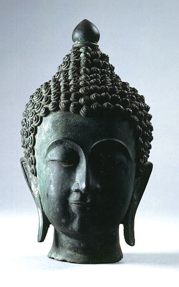

義助慰安婦 —— 李敖百件珍藏義賣藝術品（第48件） 品 名： D2. 銅佛頭（仿品） 預估價： 2 萬 成交價： 6 萬 說 明： 中國古時候有一種文化，就是作戰勝利後，將敵人的首級砍下帶去「研究」。當年關公的首級就被帶至洛陽給曹操看，所以關公真正的葬身之地有二：一是河南洛陽（首級），另一是湖北襄陽（屍身）。這件「函首」是高信疆先生送李敖的。雖然是件仿品，工卻很細，甚為難得。 
中國古時候有一種文化，就是作戰勝利後，將敵人的首級砍下帶去「研究」。當年關公的首級就被帶至洛陽給曹操看，所以關公真正的葬身之地有二：一是河南洛陽（首級），另一是湖北襄陽（屍身）。這件「函首」是高信疆先生送李敖的。雖然是件仿品，工卻很細，甚為難得。